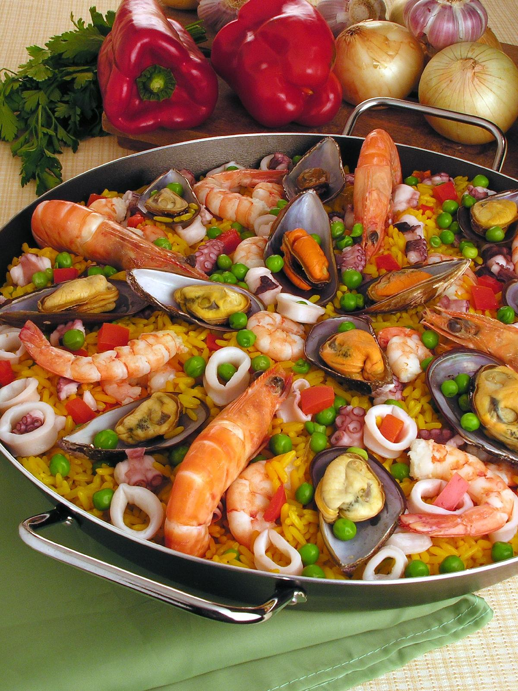

Paella
- ⏳ 1 hora e 30 min
- 🍽️ 6 porções
- Difícil
Ingredientes
Modo de preparo
-
Prepare o caldo
Aqueça o caldo de peixe em uma panela e dissolva o açafrão nele. Mantenha o caldo quente em fogo baixo durante todo o preparo.
-
Prepare os frutos do mar
Limpe os camarões e tempere-os, junto com a lula, com sal e um pouco de suco de limão. Reserve na geladeira até a hora de usar.
-
Grelhe os frutos do mar
Em uma paellera (ou frigideira larga e funda), aqueça 2 colheres de azeite e salteie os camarões por 1 a 2 minutos de cada lado. Retire e reserve. Faça o mesmo com a lula.
-
Faça o sofrito
Na mesma panela, adicione o restante do azeite e refogue a cebola, o alho e o pimentão vermelho picados por cerca de 8 minutos, até murchar e dourar levemente.
-
Toste o arroz
Acrescente o arroz arbóreo e mexa por 1 a 2 minutos para que ele absorva o sabor do refogado.
-
Cozinhe o arroz
Despeje o caldo quente com açafrão sobre o arroz, distribua bem e não mexa mais. Cozinhe em fogo médio por cerca de 18 a 20 minutos, até o arroz absorver o líquido.
-
Finalize
Nos últimos 5 minutos, distribua a ervilha, os camarões e a lula por cima do arroz. Desligue o fogo, cubra com um pano e deixe descansar por 5 minutos.
-
Sirva
Leve a paella à mesa na própria panela, com gomos de limão para espremer por cima. Se o fundo do arroz ficar tostadinho (o famoso socarrat), melhor ainda!